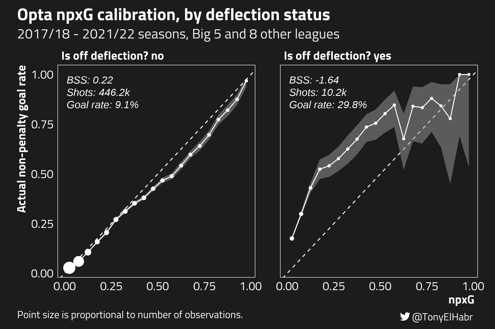
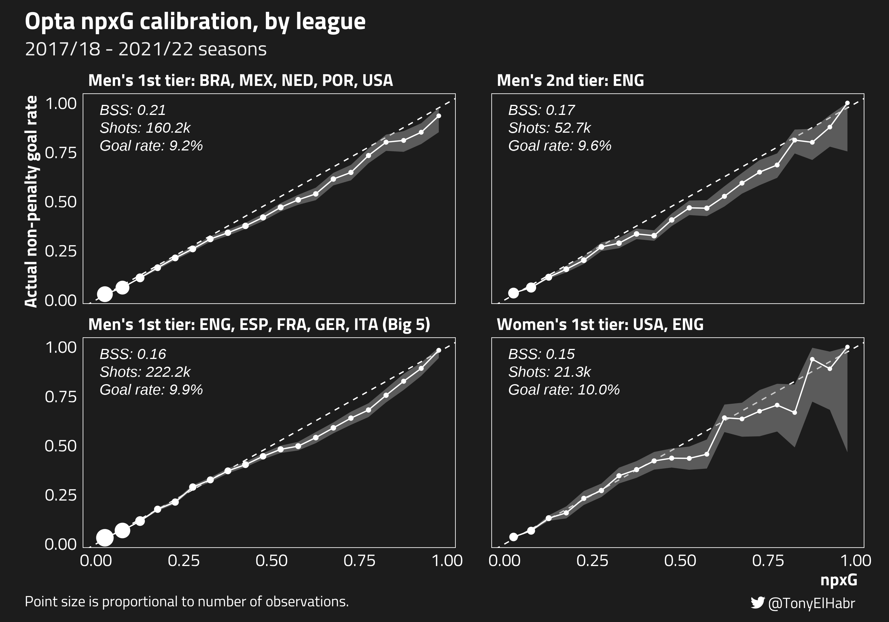

xG Model Calibration
Introduction
Recently, I pointed out what seemed to be a bug with the expected goals (xG) data shown on FBref. In particular, the difference between non-penalty goals (npG) and non-penalty xG (npxG)1 seemed to be an outlier for the 2021/22 season across the Big 5 leagues.
“aLl xG mOdeLs ArE thE sAme”
my brother in christ wut is this then pic.twitter.com/7tjp1VFkoc— Tony (@TonyElHabr) January 14, 2023
As it turns out FBref and their data provider, Opta, agreed! On Feb. 8, 2023, they posted an update indicating that they adjusted their 2021/22 xG such that the difference between npG and npxG is much more in line with other seasons.
The FBref/Opta update gave me two ideas:
Compare pre- and post-update xG to identify where/how adjustments were applied. Where were the “blind spot(s)”?2
Quantify the calibration of their xG model. Are there obvious weak points with the model?
1. Pre- and post-update xG comparison
First, let’s take a wholistic look at all of the shots for the 2021/22 seasons played in Big 5 leagues.

Of the 44,986 shots in the data set, 30,326 (67.2%) had changes to their xG values.3 Of those that changed, 23, 584 (78.0%) were reduced, i.e. the pre-update xG value was higher. The average change was pretty minimal, just about ~0.01 xG.
Code
glimpse(discretized_updated_np_shots)
#> Rows: 44,986
#> Columns: 16
#> $ league <fct> ENG, ENG, ENG, ENG, ENG, ENG, ENG, ENG, ENG, ENG, E…
#> $ date <date> 2021-08-13, 2021-08-13, 2021-08-13, 2021-08-13, 20…
#> $ half <dbl> 1, 1, 1, 1, 1, 2, 2, 2, 1, 1, 1, 1, 1, 1, 1, 2, 2, …
#> $ minute <chr> "11", "12", "22", "28", "30", "66", "73", "80", "2"…
#> $ team <chr> "Brentford", "Brentford", "Brentford", "Brentford",…
#> $ player <chr> "Frank Onyeka", "Bryan Mbeumo", "Sergi Canós", "Ser…
#> $ new_xg <dbl> 0.08, 0.09, 0.02, 0.06, 0.26, 0.06, 0.40, 0.28, 0.0…
#> $ old_xg <dbl> 0.09, 0.14, 0.04, 0.07, 0.31, 0.13, 0.58, 0.27, 0.0…
#> $ is_goal <fct> no, no, yes, no, no, no, yes, no, no, no, no, no, n…
#> $ distance <fct> "(8,10]", "(12,14]", "(16,18]", "(20,25]", "(12,14]…
#> $ sca1 <fct> pass_live, pass_live, pass_live, pass_live, take_on…
#> $ body_part <fct> Head, Right Foot, Right Foot, Right Foot, Right Foo…
#> $ is_from_deflection <fct> no, no, no, no, no, no, no, no, no, no, no, no, no,…
#> $ is_from_volley <fct> no, no, no, no, no, no, no, no, no, yes, no, no, no…
#> $ is_free_kick <fct> no, no, no, no, no, no, no, no, no, no, no, no, no,…
#> $ is_primary_foot <fct> missing, no, yes, yes, no, yes, missing, missing, y…
discretized_updated_np_shots |>
mutate(xgd = old_xg - new_xg) |>
pull(xgd) |>
mean()
#> [1] 0.0095014To get more insight into how/why xG changed, we can look at changes to xG values grouped by various features that we can derive from data that FBref publishes alongside each shot’s xG, including distance (yards), sca1 (first shot-creating action), body_part, is_from_deflection, is_from_volley, is_free_kick, and is_primary_foot.45
The table below shows that the reductions in npxG occurred most frequently for longer distances, suggesting that the pre-update xG model was over-predicting xG for longer shots. Interestingly, xG for shots when interceptions were the shot-creating action that led directly to the shot, and xG for shots with body_part = "other" (non-foot, non-header) were also frequently reduced, in the cases where xG was changed.
| Feature | Group | # of non-penalty shots | # of shots with changed npxG | # of shots with lower post-update npxG of those that changed |
|---|---|---|---|---|
distance |
(25,30] |
6,061 | 3,659 (60.4%) | 3,437 (93.9%) |
distance |
(20,25] |
6,760 | 4,463 (66.0%) | 4,088 (91.6%) |
sca1 |
"interception" |
149 | 96 (64.4%) | 87 (90.6%) |
distance |
(18,20] |
1,889 | 1,232 (65.2%) | 1,088 (88.3%) |
distance |
(30,35] |
2,725 | 1,267 (46.5%) | 1,117 (88.2%) |
body_part |
"Other" |
191 | 153 (80.1%) | 130 (85.0%) |
On the other end of the spectrum, reductions in npxG occurred least frequently for shorter distance buckets ((0,2], (2,4], (4,6], (6,8)). Reductions still occurred a majority of the time when there was a change—note that each has >50% for the last column—for all but the shortest distance group, (0,2].
| Feature | Group | # of non-penalty shots | # of shots with changed npxG | # of shots with lower post-update npxG of those that changed |
|---|---|---|---|---|
distance |
(0,2] |
173 | 130 (75.1%) | 51 (39.2%) |
distance |
(2,4] |
1,087 | 826 (76.0%) | 428 (51.8%) |
distance |
(4,6] |
2,003 | 1,479 (73.8%) | 831 (56.2%) |
distance |
(35,Inf] |
539 | 313 (58.1%) | 177 (56.5%) |
distance |
(6,8] |
2,557 | 1,882 (73.6%) | 1,183 (62.9%) |
is_free_kick |
"yes" |
1,576 | 882 (56.0%) | 557 (63.2%) |
2. xG Model Calibration
I’ve touched on model calibration before, when discussing xG-implied match outcome probabilities. There, I wrote my own code to create a calibration plot. Since then, the {tidymodels} team has added calibration plot functionality to the {probably} package. Let’s try it out.
Here, we’ll use a big sample of data—all 2017/18 - 2021/22 non-penalty shots for the Big 5 leagues and several other first and second tier leagues.6
Code
np_shots |> count(league, name = 'n_shots')
#> # A tibble: 13 × 2
#> league n_shots
#> <chr> <int>
#> 1 BRA_1st_M 39380
#> 2 ENG_1st_F 11366
#> 3 ENG_1st_M 46766
#> 4 ENG_2nd_M 52701
#> 5 ESP_1st_M 43398
#> 6 FRA_1st_M 43021
#> 7 GER_1st_M 39148
#> 8 ITA_1st_M 49903
#> 9 MEX_1st_M 32650
#> 10 NED_1st_M 29803
#> 11 POR_1st_M 27366
#> 12 USA_1st_F 9887
#> 13 USA_1st_M 31047Calibration plot
We can use probably::cal_plot_breaks() to visually assess whether the observed rate of non-penalty goals (y-axis) is close to the predicted probability of goals (npxG, x-axis).7 If the xG model’s predictions are “well calibrated”, the calibration points will align with the “ideal” line having slope 1 and intercept 0. Points at which the curve is below the diagonal line indicate where the model is more likelty to overpredict; and, likewise, points where the curve is above the diagonal line indicate where the model is underpredicting.
Code
library(probably) ## 0.1.0.9007
overall_calibration <- cal_plot_breaks(
np_shots,
truth = is_goal,
estimate = xg,
num_breaks = 20,
conf_level = 0.9,
event_level = 'second'
)We can see that the model is pretty well calibrated on the lower end of the spectrum, when xG < 0.25. This makes up a larger majority of the shots (~90%). However, the model is not as well calibrated for higher xG values, tending to overpredict. For example, at the calibration point where npxG is 0.675, the actual goal rate is 0.6.
Observing the miscalibration for shots with xG > 0.25, one has to wonder whether the removal of the “big chance” feature in favor of other contextual features—an update that Opta made sometime in the first half of 2022—may have (unintentionally) made the model worse in some ways.8 Unfortunately, I didn’t have accessed to Opta xG data prior to that update, so I can’t evaluate this hypothesis. (For all we know, the model calibration for high xG shots might have been worse before!)
Brier Skill Score (BSS)
One thing that is not provided in the {tidymodels} realm (specifically, the {yardstick} package) is a function to compute Brier score. Nonetheless, we can define a Brier score function ourselves by closely following the mean squared error custom metric example provided by the {tidymodels} team.9
Code
library(yardstick)
library(rlang)
brier_score <- function(data, ...) {
UseMethod('brier_score')
}
brier_score <- yardstick::new_prob_metric(brier_score, direction = 'minimize')
brier_score_vec <- function(truth, estimate, na_rm = TRUE, event_level, ...) {
brier_score_impl <- function(truth, estimate, event_level, ...) {
truth <- 1 - (as.numeric(truth) - 1)
if (event_level == 'second') {
truth <- 1 - truth
}
mean((truth - estimate)^2)
}
## Recycle the estimate value if it's scalar-ish.
if (length(estimate) == 1) {
estimate <- rep(estimate, length(truth))
}
yardstick::metric_vec_template(
metric_impl = brier_score_impl,
truth = truth,
estimate = estimate,
na_rm = na_rm,
cls = c('factor', 'numeric'),
estimator = 'binary',
event_level = event_level,
...
)
}
brier_score.data.frame <- function(data, truth, estimate, na_rm = TRUE, event_level = 'first', ...) {
yardstick::metric_summarizer(
metric_nm = 'brier_score',
metric_fn = brier_score_vec,
data = data,
truth = !!rlang::enquo(truth),
estimate = !!rlang::enquo(estimate),
na_rm = na_rm,
event_level = event_level,
...
)
}Let’s compute the Brier scores for (1) the overall goal rate (i.e. shots per goal) and (2) xG. We should expect the Brier score for the latter to be closer to 0 (perfect model), since xG should be a better predictor of goals than the naive goal rate.
Code
np_goal_rate <- np_shots |>
count(is_goal) |>
mutate(prop = n / sum(n)) |>
filter(is_goal == 'yes') |>
pull(prop)
np_goal_rate
#> 0.0960288
np_goal_rate_brier_score <- np_shots |>
brier_score(
truth = is_goal,
estimate = !!np_goal_rate,
event_level = 'second'
) |>
pull(.estimate)
np_goal_rate_brier_score
#> [1] 0.08680727
npxg_brier_score <- np_shots |>
brier_score(
truth = is_goal,
estimate = xg,
event_level = 'second'
) |>
pull(.estimate)
npxg_brier_score
#> [1] 0.07150071Now we can go on to compute Brier skill score (BSS) using an appropriate reference Brier score.10 In this context, the average goal rate seems to be a good choice for a baseline. In contrast to the Brier score, a higher BSS is ideal. (A perfect model would have a BSS of 1.)
Code
1 - (npxg_brier_score / np_goal_rate_brier_score)
#> [1] 0.176328A BSS of ~0.18 is not bad! This is better than FiveThirtyEight’s BSS for predicting the results for men’s World Cup matches (~0.12 at time of writing) and right around their BSS for predicting WNBA playoff game outcomes (~0.18).11
Grouped Calibration and BSS
Now let’s take a look at model calibration under specific criteria. Is the model worse for shots that follow a dribble (take_on) shot-creating action? After a live_ball pass? etc.
A couple of observations and thoughts:
xG of shots following another shot are over-predicted so much that it causes the BSS to be negative.12 This means that the model is actually doing worse in its xG assignment than simply predicting naive goal rate for shots after another shot!
A relatively “jagged” calibration plot may not correspond with a worse (lower) BSS score; and visa versa, a relatively “smooth” calibration plot may not correspond with a better (higher) BSS.
- Note that the
fouledcalibration looks jagged for higher predicted xG, but the fact that goals are only scored on about 5% shots immediately following a foul means that inprecise probabilities are not “penalized” quite as much. On the other hand, while thepass_livecalibration looks relatively smooth, the 10% goal rate following live ball passes (2x the frequency for shots following fouls) means that it is more penalized for imprecision than an otherwise equivalent post-fouledshot. In fact, this is one of the shortcomings of BSS—it does not do a great job with evaluation of relatively infrequent events.
- Note that the
Next, let’s take a look at calibration of shots coming after deflections (of other shots).

- The model doesn’t seem to be very well calibrated for shots following deflections! Like shots following other shots in the shot-creating action calibration plot, the BSS for shots after deflections is negative. And, perhaps more interestingly, the model seems to underpredict post-deflection shots, which is the opposite of it’s general tendency to overpredict. (See the wholistic calibration plot from before.)
- I’d suspect that there’s lots of confounders that might explain the lack of calibration after deflections. For one, it could be the case that there are often zero defenders between the shot-taker and keeper for shots following a deflection. As far as I know, the Opta model doesn’t have an explicit feature for this.
- As with the overall model calibration, one has to wonder whether the model may have performed better on shots following deflections with the binary big chance feature.
- The high goal rate on shots after deflections relative to the goal rate on all other shots certainly contributes to the negative BSS, as we saw earlier with shots following other shots.
Moving on, let’s look at calibration of the xG model by groups of leagues, splitting out by tier and gender.

- StatsBomb has talked about how a “gender-aware” model outperformed a baseline model, so one might expect the calibration of Opta’s singular model to be weaker for the women’s game. It turns out that while, yes, the calibration seems to be a bit worse for shots in the women’s leagues, the overall difference in model performance for men’s and women’s leagues seems to be trivial for the sample here.
- Interestingly, the calibration of the model for non-Big 5 leagues and the English men’s Championship league are slightly better according to BSS, although the differences (both visually, with the calibration curve, and with BSS) are very minimal.
Finally, let’s look at how footedness may play a role in model calibration. As far as I know, whether or not a footed shot is take by a player’s primary foot is not an input into the Opta model, so it may be particularly interesting to look at.

- Despite my suspicion that xG for shots taken by a player’s weaker foot (
right foot shot, left-footedandleft foot shot, right-footed) might be severely overpredicted, this doesn’t really seem to be the case. Yes, the model tends to overpredict for these kinds of shots, but the degree to which overprediction occurs doesn’t seem out of line with the whole model.- I can think of least two types of “selection bias” at play here that might explain why the calibration isn’t as bad as I might have guessed for weak-footed shots:
- Players are more likely to take weak-footed shots when they’re closer to the goal, where shots are likely to have higher xG, but also where shots are more likely to go in.
- Players are less likely to take more difficult shots with their weak foot, so they’re not taking as many shots that are unlikely to go in, holding all else equal.
- I can think of least two types of “selection bias” at play here that might explain why the calibration isn’t as bad as I might have guessed for weak-footed shots:
- Of the non-footed shots, it’s interesting to see that the BSS for headers and shots from
otherbody parts are not particularly well calibrated. In fact, the latter has a negative BSS, indicating that we’d better off with a model that predicted the average goal rate for such shots.- A high goal rate on such shots compared to other types of shots seems to, once again, be the reason that BSS looks particularly bad here.
Conclusion
We’ve explored the wonderful world of model calibration, making friends with BSS and calibration curves in our investigation of a public xG model. Are BSS and calibration curves the be-all and end-all when it comes to model evaluation? Of course not! But they’re useful tools that may or may not be appropriate for your use case.
When it comes to the Opta xG model specifically, am I implying that the model is bad? Of course not (again)! Yes, faceted calibration curves and feature-specific BSS can make a model look bad, but we must keep in mind that there are trade-offs to be made with modeling. Fine-tuning a model to be more well calibrated under certain conditions, e.g. shots after deflections, may make other parts of the model worse! It’s all about trade-offs.
Footnotes
It’s typically better to analyze expected goals after removing penalties since penalties can distort quantities, adding “noise” to an analysis.↩︎
FBref/Opta didn’t specify how they changed their xG model. Given how I observed very only trivial differences in the shot-level xG for prior seasons, it’s possible that they didn’t even change their model! There could have been some data issue specific to the 2021/22 season, that, when addressed, resulted in more plausible xG.↩︎
Observe that, for a large majority of shots, where xG is in the (0, 0.05] range, xG either did not change at all or only trivially changed. (See the blur of white points on the left-hand side of the plot.)↩︎
Several of these are not provided directly from the raw FBref tables. For example,
is_from_deflectionis derived from theNotesfield in the FBref shot table.is_primary_footis derived from collecting player footedness data and checking for a match withbody_part.↩︎Note that I use the term “feature” here, although this set of fields does not quite match the actual inputs to the Opta xG model. While things like
distanceandbody_partcertainly are inputs to the model, we don’t have angle of the shot to the goal, andis_primary_foot—a field that I’ve added the feature set myself—isn’t one of the model inputs, as far as I’m aware.↩︎Several leagues don’t have data available for all such seasons, which is reflected in the number of shots per league in
np_shots.↩︎I’ve written my own code to plot the calibration, but I imagine most users will be satisfied with the plot that
{probably}will generate for you.↩︎Thanks to a handful of people who reached out and made me aware of this, after I initially published this post. I’ve gone back and updated some wording.↩︎
Brier score for a binary classification task is equivalent to mean squared error.↩︎
Personally, I like to use BSS over other classification metrics like ROC AUC or Brier score alone. BSS is arguably the most interpretable probabilistic classification measure. Also, I like that you have to specify a reference with which to compare, which seems like good principle in general.↩︎
I’m perhaps comparing apples to oranges here for the sake of providing some additional context that might help interpretability. The truth is that BSS is only comparable among different tasks to the extent that the reference choice in each task is “uninformed” to the same degree. For example, I could have said that the baseline for goals per shot is 50% instead of the actual goal rate (about 10%). This would change the baseline brier score to 0.25, and would inflate the BSS to 0.71. On the other hand, a 50/50 baseline makes sense in other settings. In fact, that’s what FiveThirtyEight uses for match outcome BSS for various sports.↩︎
The reader may be wondering what the BSS would look like if I had used the Brier score of the goal rate grouped by each feature as the baseline for BSS, instead of the overall goal rate. In that case, all BSS’s would be positive, and the
fouledBSS would actually be the lowest, as opposed to the highest! Perhaps this would better match intuition, given how the calibration curve forfouledlooks like one of the worst here. I’m not strongly opposed to choosing the grouped goal rate as the baseline instead of the overall goal rate, if that’s what one so happens to believe is a better choice.↩︎